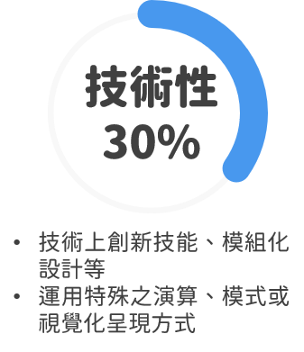
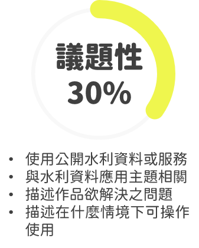
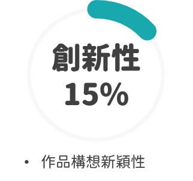
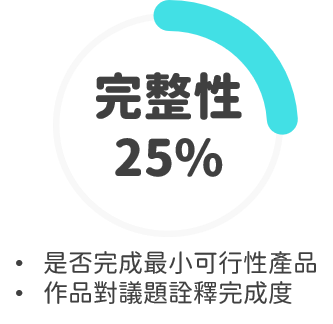

評審委員
| 姓名 |
服務單位 |
單位職稱 |
| 何明彥 |
台灣創意工場 |
投資長 |
| 余孟勳 |
峰傅智慧股份有限公司 |
軟體技術經理 |
| 李振北 |
永訊智庫股份有限公司 |
執行長 |
| 沈志全 |
方圖科技股份有限公司 |
負責人 |
| 林彥光 |
臺北醫學大學大數據研究中心 |
主任 |
| 林錫慶 |
國家實驗研究院高速網路與計算中心 |
副主任 |
| 衷嵐焜 |
奇點無限有限公司 |
創辦人 |
| 張維志 |
Opendata.tw計畫 |
發起人 |
| 張廣智 |
經濟部水利署 |
副總工程司 |
| 許武龍 |
LASS開源公益環境感測器網路 |
創辦人 |
| 陳永裕 |
大同大學機械工程學系 |
教授 |
| 陳伶志 |
中央研究院資訊科學研究所 |
處長 |
| 陳幸延 |
開放農業實驗基地 |
創辦人 |
| 彭啟明 |
開放資料聯盟 |
會長 |
| 劉嘉凱 |
智庫驅動股份有限公司 |
執行長 |
評分標準




| |
項目 |
內容 |
百分比 |
總百分比 |
| 1 |
技術性 |
技術上的創新技能、模組化設計等 |
20% |
30% |
| 運用特殊之演算、模式或是視覺化的呈現方式 |
10% |
| 2 |
議題關聯性 |
使用公開水利資料或服務。 |
10% |
30% |
| 與水利資料應用主題相關。 |
10% |
| 描述作品欲解決之問題。 |
5% |
| 描述在什麼情境下可操作使用。 |
5% |
| 3 |
創新性 |
作品構想新穎性 |
15% |
15% |
| 4 |
完整性 |
是否完成最小可行性產品 |
10% |
25% |
| 作品對議題詮釋完成度 |
15% |